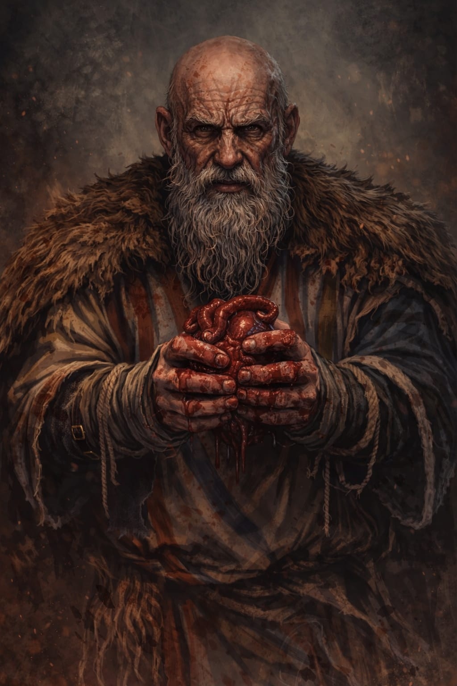
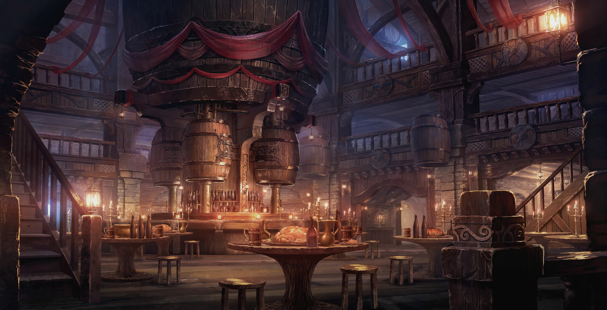
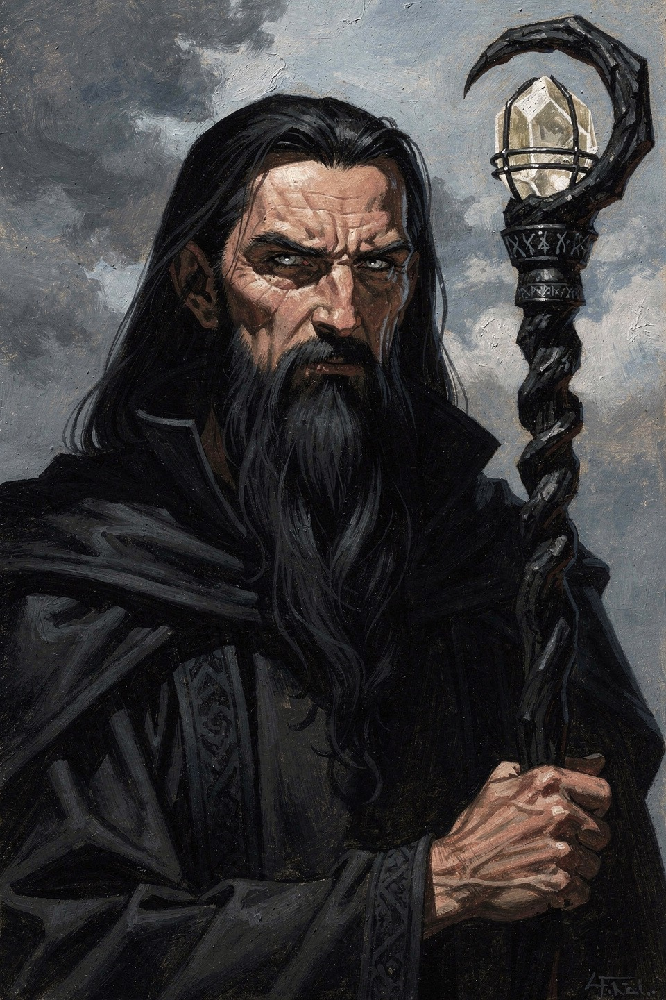
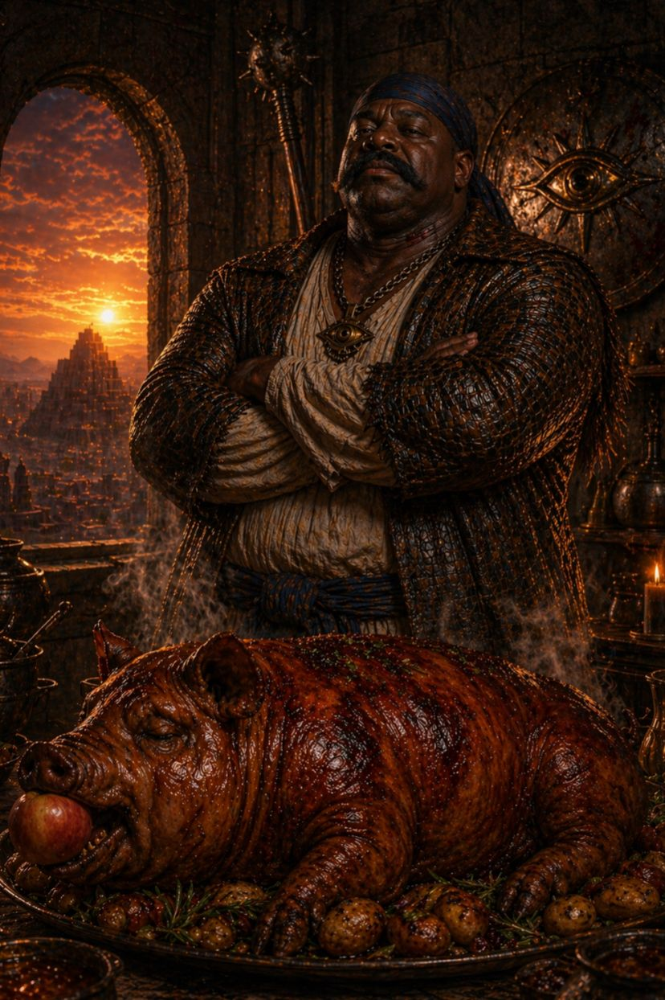
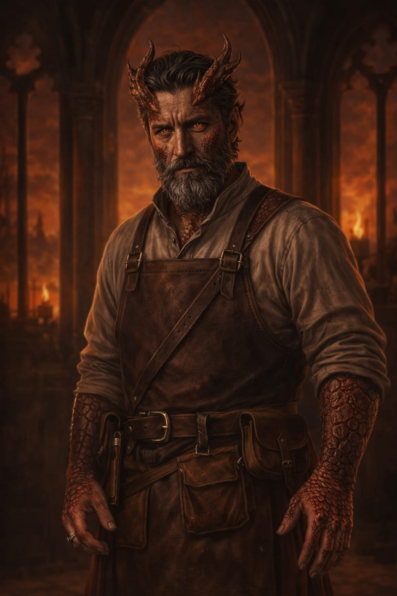

Thorgun
Matheus
Silencioso como as montanhas e resistente como o aço que forja. Thorgun não faz perguntas, e espera o mesmo dos clientes. Cuida do açougue da taverna e de seus hóspedes com igual devoção.
Uma taberna lendária nos confins do mundo
Alguns dizem que a Estrada para os Céus fica no caminho do céu.
Outros juram que é o desvio.

O salão é amplo, de pé-direito alto, sustentado por vigas grossas e antigas. No centro, o elemento mais marcante: um balcão circular elevado, sustentado por pilastras robustas. Presos a elas, barris suspensos por correntes grossas vertem líquidos densos e escuros por torneiras de metal gasto.
Aqui não se bebe qualquer coisa:
O ar é carregado: gordura quente, pão rústico, couro úmido, ervas queimadas. As mesas são troncos maciços e os bancos rangem sob qualquer peso. A iluminação vem de velas e candelabros baixos — a luz nunca é suficiente, e as sombras sempre parecem maiores do que deveriam.
Duas escadarias se erguem em lados opostos, simétricas, curvando-se até o andar superior como se abraçassem o salão. Os degraus são gastos no centro — muitos pés, muitas eras. No alto, uma galeria contorna todo o salão. As balaustradas são entalhadas com padrões estranhos, quase geométricos demais para serem apenas decoração. À distância, parecem se mover com a luz.
A taverna não separa hóspedes por raça, mas por quanto estão dispostos a pagar.
Albergue Comum (8 a 12 pessoas)
Quartos Intermediários (6 a 8 pessoas)
Quartos Nobres (2 a 4 pessoas)
Lá embaixo, o teto é baixo e arqueado, sustentado por pedra antiga. Fileiras de tonéis ocupam o espaço em ordem quase ritual. Entre os tonéis maiores, repousam ânforas enterradas parcialmente no chão de terra batida. Algumas vedadas com cera escura, outras apenas cobertas com pano grosso. O líquido dentro delas não é servido a qualquer um.
Nos fundos da taverna, além do corredor que se afasta do salão, uma porta pesada conduz ao açougue. O calor ali é diferente — não acolhe, não envolve. Ele gruda. Ganchos de ferro descem do teto em fileiras, sustentando carcaças inteiras ou cortes grandes. Cordas grossas, lâminas largas, serras de dentes irregulares — tudo tem uso, nada é decorativo. Há sempre calor vindo de uma fornalha baixa, usada para selar, queimar ou limpar. A fumaça sobe pesada, grudando nas paredes.
Econômico
★ Mais Escolhido
Conforto
Luxo
Arcano
Aventureiro

Matheus
Silencioso como as montanhas e resistente como o aço que forja. Thorgun não faz perguntas, e espera o mesmo dos clientes. Cuida do açougue da taverna e de seus hóspedes com igual devoção.

Pablo
Ninguém sabe ao certo o que Aion fez antes de chegar à Estrada para os Céus. Ele gerencia as finanças, os contratos e os segredos. Não o contradiga na conta.

Licoln
Com mãos que viram guerras e fogões, Tripa de Boi comanda a cozinha com a mesma autoridade que um general comanda um exército. Seu assado da casa é sussurrado nos bardos como lenda viva.

Bruno
Metade homem, metade mistério. Zarek toma conta do bar e das histórias. Diz-se que suas escamas brilham quando mente, o que explica por que sua cerveja nunca está "acabada".